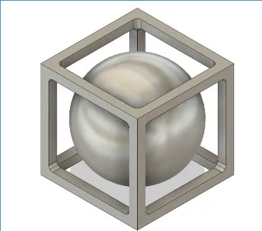
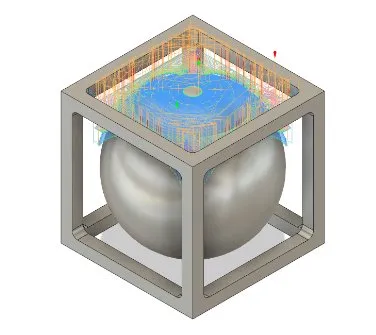

Ball In The Box
CTE Engineering Pathway — Pacific Grove High School



My first attempt at a CNC part with spherical faces. Machined on a Tormach 1100MX CNC mill. To cut most of the material I used an endmill, then smoothed the spherical surfaces with a ball-end mill. The main challenge was dialing in speeds and feeds: the original aluminum stock was too aggressive, so I switched to plywood, though the wood grain caused some splintering on certain faces. Next time I'd use a different vise setup to grip the part more securely.
Process
- CAD modeled in Fusion 360
- CAM toolpaths generated in Fusion 360 — roughing pass with endmill, finishing with ball-end mill
- Machined on Tormach 1100MX
- Material: plywood (original aluminum abandoned due to aggressive feeds)